Warner Bros. Discovery · Localisation · [YEAR]
What Am I Eating? is a graphics-dense food factual series built around near-constant on-screen illustration - labels, animated 3D product packaging, handwritten signs, info cards, stat graphics, character sequences and a full title treatment. The French localisation was supplied with a partial package of project files, but the assets had been built without versioning in mind: inconsistently structured, largely undocumented, and not intended to be modified by an external team. For most elements, the practical outcome was equivalent to working from reference alone.
The project required a full package audit before any localisation work could begin, followed by selective rebuilding of unusable files, typeface matching throughout, and layout restructuring to accommodate French text expansion. The title itself required cultural adaptation rather than direct translation.
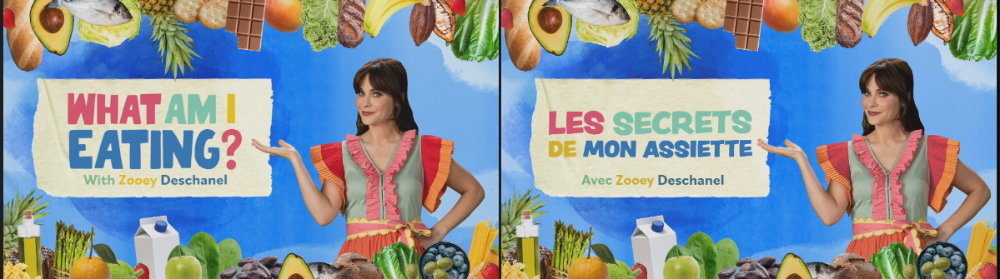
The supplied package covered most assets in theory, but the structure varied significantly between elements - many files were unlabelled, layered inconsistently, or non-functional when opened. The original typefaces were not included. The first stage of the project was a full audit to categorise each asset: usable as supplied, salvageable with restructuring, or requiring a complete rebuild from reference.
The variety of graphic styles across the series - each with its own construction logic and visual language - meant that no single approach applied to the full package. Each element type was assessed and handled individually.
The series uses a wide range of distinct graphic systems across its 8 episodes - illustrated set labels, animated 3D product packaging, handwritten signs, full-screen info cards, stat graphics, animated character sequences and transition elements. Each type presented different rebuild and localisation requirements.
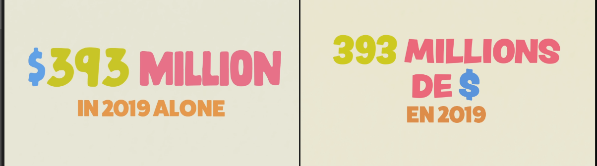
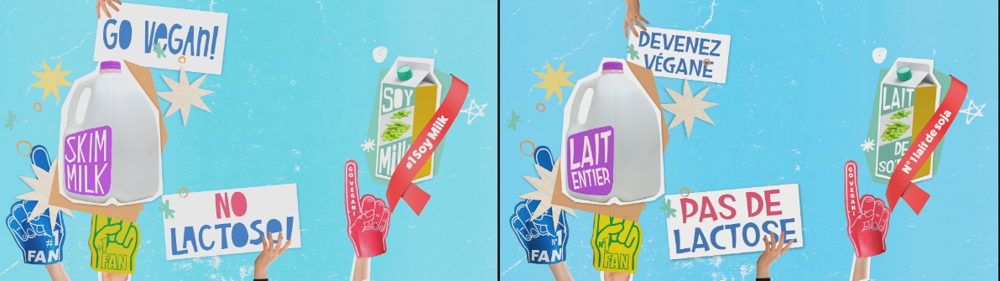
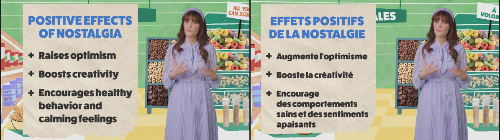
As no typefaces were supplied, every font used across the series had to be identified from reference frames and matched with available alternatives. Given the show's deliberately varied, hand-crafted aesthetic, this involved a large number of distinct typefaces - from printed label fonts through to animated handwritten styles. Where a close substitute was not available, weight, spacing and size were adjusted to compensate for visual differences between the original and replacement.
Where typefaces differ from the originals, the rebuilt graphics match the visual intent - weight, scale, colour and layout - rather than the specific letterform.
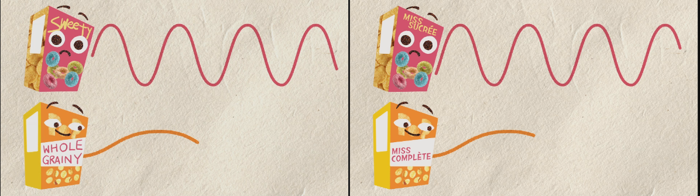
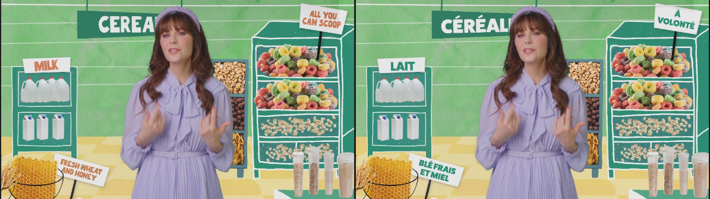
French text consistently runs 20-30% longer than English. On a series where text functions as a visual design element - sized, positioned and animated as part of the illustration - this requires layout restructuring for every affected graphic, not a simple text substitution.
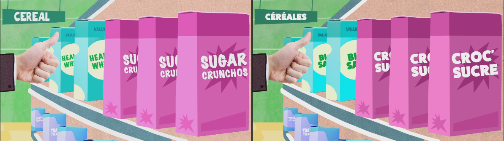
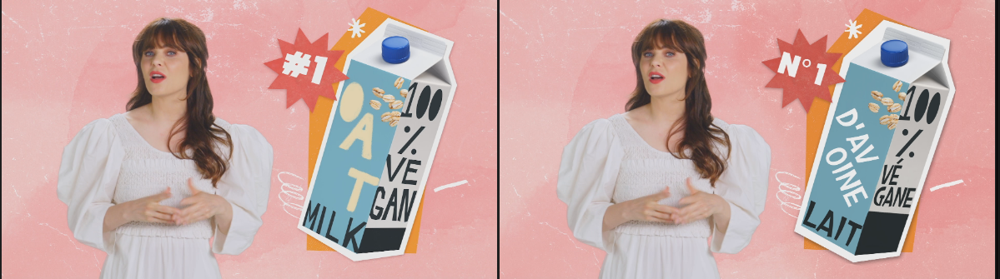
A number of elements in the series are text applied to 3D animated product packaging rather than flat graphics. Rebuilding these required matching not only the typography but the perspective, surface treatment and animation of the original 3D renders, working from flat broadcast reference frames.
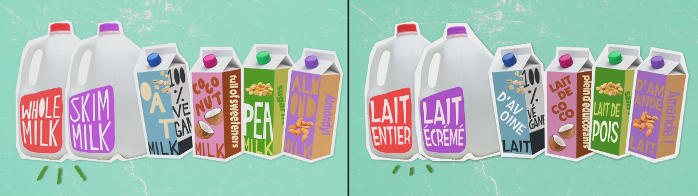
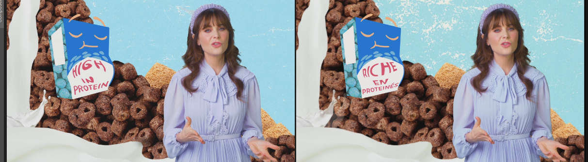
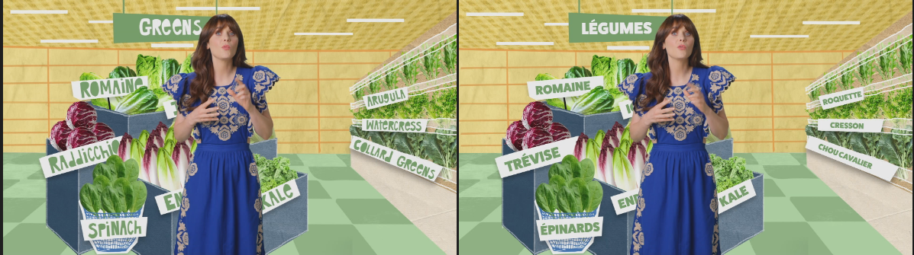
Across 8 episodes of a graphics-dense series, the volume of distinct graphic elements - each requiring individual audit, rebuild and localisation - made this one of the more complex localisation projects in the series run. The range of illustration styles, typeface matching requirements, text expansion issues and 3D elements meant that each graphic presented a different set of challenges.
Original package design: Warner Bros. Discovery. Designer unknown.
My role: GFX localisation, package audit and partial rebuild at Warner Bros. Discovery.